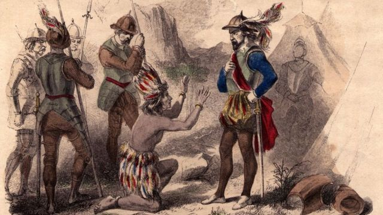
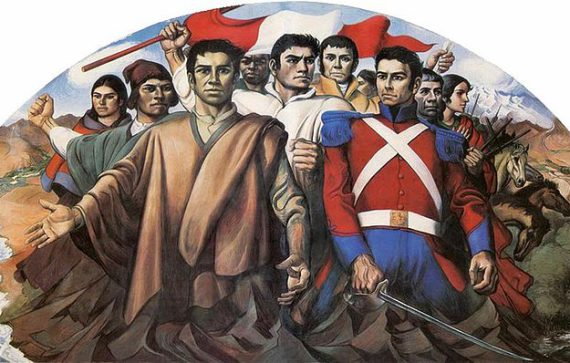
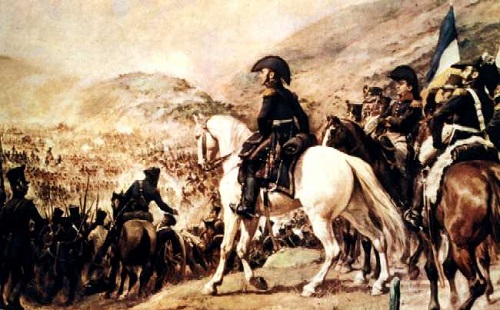
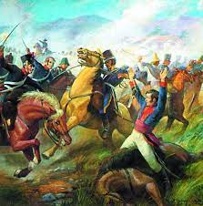
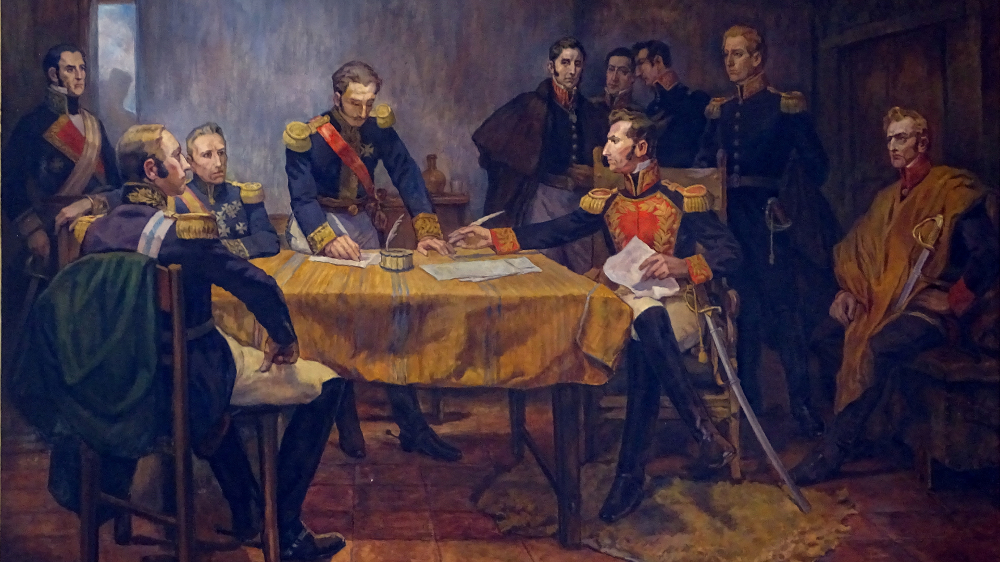
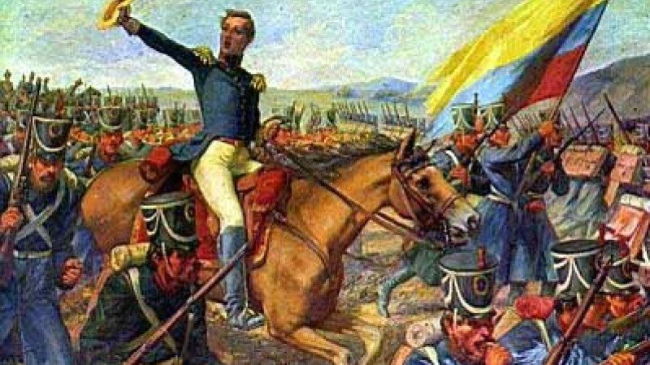
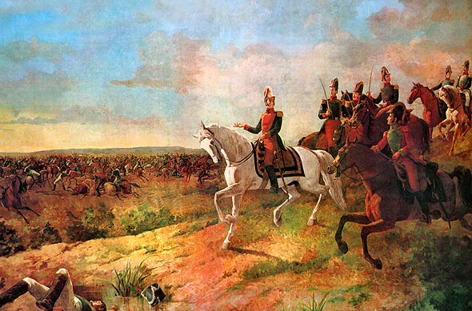
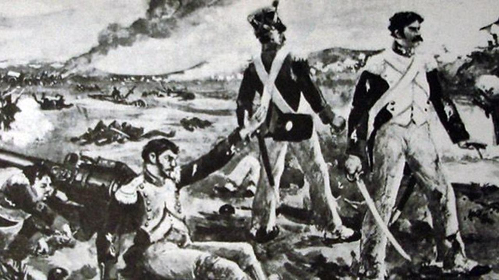
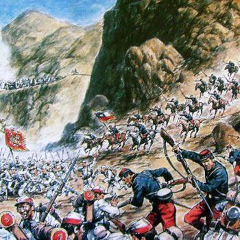
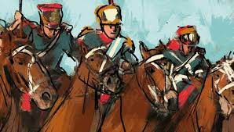

Antecedentes
La independencia del Perú fue un proceso histórico que tuvo lugar aproximadamente entre 1811 y 1824,
culminando en la proclamación de la independencia por José de San Martín el 28 de julio de 1821 y con la
victoria decisiva de las fuerzas independentistas en la batalla de Ayacucho el 9 de diciembre de 1824.
Los antecedentes de la independencia del Perú se pueden rastrear hasta la crisis general que sacudió al
Imperio español a principios del siglo XIX. La invasión de España por las fuerzas napoleónicas en 1808 y la
captura del rey Fernando VII desencadenaron una serie de revueltas en América Latina, ya que los colonos
aprovecharon la oportunidad para buscar una mayor autonomía o la independencia total.
En el Perú, los movimientos por la independencia fueron reprimidos inicialmente. A diferencia de otras
colonias españolas en América, el Perú era el centro del poder español en América del Sur y contaba con una
fuerte presencia de leales al rey.
Sin embargo, el descontento se estaba gestando. Las reformas borbónicas del siglo XVIII habían causado
malestar entre los criollos (personas de ascendencia española nacidas en las colonias), que se sentían
marginados de los puestos de poder en favor de los peninsulares (nacidos en España). Además, el sistema de
trabajo forzado en las minas y las plantaciones era una fuente constante de conflicto y resistencia entre
los indígenas y mestizos.
El primer levantamiento importante en el Perú fue la rebelión de Túpac Amaru II en 1780, aunque fue más un
levantamiento social y racial que un movimiento por la independencia. Sin embargo, sembró las semillas del
descontento que eventualmente conduciría a la independencia.
A principios del siglo XIX, las ideas de la Revolución Francesa y la Independencia de los Estados Unidos
estaban circulando por toda América Latina. Estos ideales de libertad y autogobierno influyeron en los
criollos peruanos, que comenzaron a pensar en la posibilidad de un estado independiente.
La independencia del Perú fue finalmente lograda por las fuerzas del general argentino José de San Martín y
del venezolano Simón Bolívar. San Martín llegó al Perú por mar desde Chile en 1820 y proclamó la
independencia en 1821. Sin embargo, la resistencia española continuó hasta 1824, cuando las fuerzas de
Bolívar ganaron la batalla de Ayacucho, asegurando definitivamente la independencia del Perú.
Antecedentes Principales:

La conquista española en América fue un proceso histórico que tuvo lugar a partir de 1492, cuando
Cristóbal Colón llegó a las costas del continente americano. Este acontecimiento marcó el inicio de una
serie de expediciones y colonizaciones por parte de los españoles, quienes buscaban riquezas y expandir
su imperio.
En el caso específico del Perú, la conquista comenzó en 1532 con la llegada de Francisco Pizarro.
Pizarro y sus hombres se encontraron con el Imperio Inca, una de las civilizaciones más avanzadas de
América en ese momento. Aprovechando las divisiones internas entre los incas, Pizarro logró capturar al
emperador Atahualpa y saquear grandes cantidades de oro y plata.
A partir de ese momento, los españoles establecieron el Virreinato del Perú, convirtiéndolo en uno de
los principales centros coloniales en América. Durante casi tres siglos, el Perú estuvo bajo el dominio
español, con una sociedad marcada por la explotación de los recursos naturales y la imposición del
sistema colonial.

Antes de la independencia oficial en 1821, hubo una serie de eventos y movimientos que sentaron las
bases para la lucha por la independencia.
Uno de los movimientos más destacados fue la rebelión liderada por Túpac Amaru II en 1780. Túpac Amaru
II, descendiente del último emperador inca, encabezó una rebelión contra el dominio español en el
Virreinato del Perú. Aunque su rebelión fue finalmente reprimida y él fue ejecutado, su lucha sentó un
precedente importante para futuras luchas independentistas.
Otro evento relevante fue la Revolución de Túpac Amaru en 1814. Esta revolución, liderada por Túpac
Amaru II y su esposa Micaela Bastidas, buscaba nuevamente la independencia del Perú y la abolición de la
opresión colonial. A pesar de su valiente resistencia, también fueron derrotados y ejecutados.
Además de estos movimientos liderados por líderes indígenas, también hubo influencias externas que
alimentaron las ideas independentistas en el Perú. Francisco de Miranda, un militar y político
venezolano, tuvo un papel importante al difundir las ideas revolucionarias en América Latina. Sus
intentos por liberar a Venezuela y establecer una república también inspiraron a otros líderes en el
continente.
La Revolución Francesa también tuvo un impacto significativo en el despertar de los ideales
independentistas en el Perú y en toda América Latina. Los principios de libertad, igualdad y fraternidad
resonaron entre aquellos que buscaban liberarse del yugo colonial.
Estos movimientos precursores sentaron las bases para la lucha por la independencia del Perú, que
finalmente se logró el 28 de julio de 1821 bajo el liderazgo de José de la Riva-Agüero y
Sánchez-Boquete, quien proclamó la independencia del Perú en Lima.
Rebeliòn de Tupac Amaru II

Túpac Amaru II era un líder indígena que se había educado en un colegio jesuita y había adquirido
conocimientos sobre filosofía, matemáticas y teología. Estos conocimientos lo llevaron a cuestionar el
sistema colonial español y a liderar una rebelión que buscaba la libertad, la igualdad y la justicia
para
los pueblos indígenas.
La rebelión de Túpac Amaru II comenzó en noviembre de 1780 en la región de Tinta, cerca de Cusco. La
rebelión se extendió rápidamente a otras regiones del Perú, y llegó a contar con el apoyo de miles de
indígenas, mestizos y criollos.
La rebelión fue brutalmente reprimida por las fuerzas españolas, que ejecutaron a Túpac Amaru II y a su
familia en mayo de 1781. Sin embargo, la rebelión sentó las bases para futuros levantamientos
independentistas en el Perú y en otros países de América Latina.
La figura de Túpac Amaru II se convirtió en un símbolo de la lucha por la independencia y su legado
inspiró
a muchos líderes independentistas que lucharon por la libertad y la justicia en América Latina.

La Expedición Libertadora, también conocida como la Campaña Libertadora del Perú, fue una misión militar
liderada por el general argentino José de San Martín con el objetivo de liberar al Perú del dominio
español y establecer la independencia.
La expedición comenzó en 1817 en la ciudad de Mendoza, en Argentina, donde San Martín reunió un ejército
compuesto por soldados argentinos y chilenos. El plan de San Martín era llevar a cabo una campaña
militar conjunta con las fuerzas independentistas peruanas lideradas por Simón Bolívar, quien se
encontraba luchando en el norte de Sudamérica.
En 1820, San Martín y su ejército desembarcaron en la ciudad peruana de Pisco, marcando el inicio de la
fase final de la expedición. A medida que avanzaban hacia Lima, San Martín y sus tropas libraron una
serie de batallas y enfrentamientos contra las fuerzas realistas españolas.
El momento clave de la expedición fue la Batalla de Ayacucho el 9 de diciembre de 1824. En esta batalla
decisiva, las fuerzas independentistas peruanas y sus aliados sudamericanos lograron una victoria
contundente sobre las tropas españolas. Esta victoria marcó un punto de inflexión en la lucha por la
independencia del Perú, ya que las fuerzas realistas se vieron debilitadas y su control sobre el
territorio peruano se desmoronó.
Después de la Batalla de Ayacucho, San Martín logró ingresar triunfalmente a Lima y proclamó la
independencia del Perú el 28 de julio de 1821. Sin embargo, a pesar de su éxito en la liberación del
territorio peruano, San Martín renunció a sus cargos y se retiró de la vida política, dejando el
liderazgo en manos de líderes locales.
La Expedición Libertadora fue un hito importante en la lucha por la independencia de América Latina.
Marcó el fin del dominio español en el Perú y allanó el camino para la creación de naciones
independientes en toda la región. Tanto José de San Martín como Simón Bolívar son reconocidos como dos
de los grandes líderes y libertadores de América Latina.

La Campaña Libertadora fue una serie de acciones militares lideradas por Simón Bolívar y otros líderes
independentistas en América del Sur durante las primeras décadas del siglo XIX. El objetivo principal de
esta campaña era liberar a los países sudamericanos del dominio español y establecer repúblicas
independientes. La campaña se llevó a cabo en varios frentes y tuvo lugar en diferentes países, como
Venezuela, Colombia, Ecuador, Perú y Bolivia.
La Campaña Libertadora se inició en 1810 con el estallido de la Guerra de Independencia de Venezuela.
Bolívar, conocido como el Libertador, lideró las fuerzas patriotas en una serie de batallas contra las
tropas realistas españolas. Una de las batallas más importantes fue la Batalla de Carabobo en 1821,
donde las fuerzas independentistas lograron una victoria decisiva que aseguró la independencia de
Venezuela.
Posteriormente, Bolívar dirigió su atención hacia la liberación de otros países sudamericanos. En 1819,
lideró la Campaña Admirable, una audaz expedición militar que cruzó los Andes y liberó a la Nueva
Granada (hoy en día Colombia). En 1822, participó en la Batalla de Pichincha, logrando la independencia
de Ecuador.
La campaña continuó con el objetivo de liberar Perú. En 1824, se llevó a cabo la Batalla de Ayacucho,
considerada como el punto culminante de la Campaña Libertadora. Las fuerzas independentistas lideradas
por Antonio José de Sucre obtuvieron una victoria decisiva sobre los realistas españoles, lo que llevó a
la independencia de Perú.
La Campaña Libertadora también tuvo un impacto en la formación de otros países sudamericanos. En 1825,
Bolivia se separó de Perú y se convirtió en una república independiente, nombrada en honor a Simón
Bolívar.
En resumen, la Campaña Libertadora fue un conjunto de acciones militares lideradas por Simón Bolívar y
otros líderes independentistas para liberar a varios países sudamericanos del dominio español. Fue un
período crucial en la lucha por la independencia en América del Sur y sentó las bases para la formación
de las naciones sudamericanas que conocemos hoy en día.
Consolidación de la Independencia

La consolidación de la independencia en América Latina fue un proceso complejo y prolongado que tuvo
lugar después de las guerras de independencia del siglo XIX. Una vez que los países sudamericanos
lograron liberarse del dominio español, enfrentaron el desafío de establecer instituciones sólidas,
definir sus sistemas políticos y económicos, y garantizar la estabilidad y el reconocimiento
internacional.
En primer lugar, se llevó a cabo la tarea de redactar y promulgar constituciones y establecer gobiernos
estables. Muchos países adoptaron constituciones inspiradas en los principios de la Ilustración y el
liberalismo político. Estas constituciones buscaban garantizar derechos individuales, separación de
poderes y participación ciudadana en la toma de decisiones políticas.
Sin embargo, la consolidación de la independencia no fue un proceso lineal ni exento de conflictos. Los
países recién independizados enfrentaron desafíos internos como luchas por el poder político, conflictos
regionales y tensiones sociales. Además, se enfrentaron a amenazas externas, como las intervenciones
militares de potencias extranjeras interesadas en mantener su influencia en la región.
En términos económicos, los países buscaban establecer una base sólida para su desarrollo. Algunos
optaron por continuar con modelos económicos basados en la exportación de materias primas, mientras que
otros promovieron políticas de industrialización y proteccionismo. Además, se establecieron sistemas
educativos y se fomentó la inversión en infraestructura para impulsar el desarrollo económico y social.
La consolidación de la independencia también implicó la búsqueda del reconocimiento internacional. Los
nuevos países sudamericanos se esforzaron por establecer relaciones diplomáticas con otras naciones y
participar en organismos internacionales. Además, se llevaron a cabo negociaciones para resolver
disputas territoriales y establecer fronteras definitivas.
A lo largo del siglo XIX, se produjeron conflictos y guerras internas en varios países sudamericanos, lo
que dificultó la consolidación de la independencia. Sin embargo, a medida que pasaba el tiempo, los
países lograron superar estos desafíos y establecer instituciones más sólidas. La figura de líderes como
Simón Bolívar, José de San Martín y otros próceres de la independencia fue fundamental para guiar este
proceso.
En resumen, la consolidación de la independencia en América Latina fue un proceso complejo que implicó
la redacción de constituciones, la formación de gobiernos estables, el desarrollo económico y social, el
reconocimiento internacional y la superación de conflictos internos. A pesar de los desafíos, los países
sudamericanos lograron avanzar hacia la consolidación de su independencia y sentaron las bases para el
desarrollo futuro de la región.
Batallas durante la Independencia del Perú
Batalla de Ayacucho (1824)

La Batalla de Ayacucho, librada el 9 de diciembre de 1824, es considerada como la batalla definitiva de
la independencia del Perú y marcó un hito en la lucha por la emancipación de América del Sur. Fue un
enfrentamiento crucial entre las fuerzas independentistas dirigidas por el general Antonio José de Sucre
y el ejército realista comandado por el virrey José de la Serna.
La batalla tuvo lugar en la Pampa de Quinua, cerca de la ciudad de Ayacucho, en lo que hoy es Perú. El
ejército realista, formado principalmente por tropas españolas y peruanas leales a la corona española,
superaba en número a las fuerzas independentistas. Sin embargo, las tropas patriotas estaban altamente
motivadas y contaban con un liderazgo estratégico sólido.
El general Sucre, discípulo y lugarteniente del libertador Simón Bolívar, desplegó una estrategia audaz
para derrotar al ejército realista. Utilizó una combinación de tácticas militares bien coordinadas,
incluyendo el uso de infantería, caballería y artillería. Además, aprovechó el terreno montañoso y las
condiciones climáticas adversas para debilitar a las fuerzas realistas.
Durante la batalla, las tropas independentistas lograron rodear y aislar al ejército realista en una
maniobra conocida como "el abrazo de Maipú". Los patriotas atacaron con ferocidad y determinación,
infligiendo grandes bajas al enemigo. La superioridad táctica y el ímpetu de las fuerzas
independentistas fueron decisivos para obtener la victoria.
El resultado fue una contundente derrota para el ejército realista. Se estima que alrededor de 5.000
soldados realistas murieron o fueron capturados, mientras que las bajas patriotas fueron
significativamente menores. Esta victoria en Ayacucho marcó el colapso definitivo del dominio español en
Perú y allanó el camino para la independencia de otros países sudamericanos.
La Batalla de Ayacucho no solo tuvo un impacto militar, sino también político y simbólico. Después de
esta batalla, el virrey José de la Serna fue capturado y se firmó el Tratado de Ayacucho, que puso fin
al dominio español en América del Sur. La independencia del Perú se consolidó y sirvió como ejemplo
inspirador para otros movimientos independentistas en la región.
En resumen, la Batalla de Ayacucho fue un enfrentamiento crucial que selló la independencia del Perú y
marcó el fin del dominio español en América del Sur. Fue una victoria estratégica y simbólica que dejó
un legado duradero en la historia de la lucha por la libertad en el continente.

La Batalla de Junín, ocurrida el 6 de agosto de 1824, fue uno de los enfrentamientos más importantes
durante la lucha por la independencia del Perú. Fue una victoria clave para las fuerzas independentistas
lideradas por el general Simón Bolívar y el general argentino Antonio José de Sucre.
La batalla tuvo lugar en la llanura de Junín, ubicada en la región central de Perú. El ejército
realista, dirigido por el general español José de Canterac, estaba compuesto principalmente por tropas
españolas y peruanas leales a la corona española. Por otro lado, las fuerzas patriotas estaban
conformadas por soldados peruanos, colombianos y argentinos que luchaban por la independencia de América
del Sur.
Enfrentándose a una desventaja numérica, las tropas independentistas utilizaron tácticas militares
astutas para nivelar el campo de batalla. Aprovechando su conocimiento del terreno y las condiciones
climáticas adversas, lograron sorprender a las fuerzas realistas. Además, contaban con un liderazgo
estratégico sólido y una gran determinación para alcanzar la victoria.
El general Sucre lideró personalmente la caballería patriota en una carga audaz que rompió las filas
realistas y causó confusión en sus filas. Mientras tanto, Bolívar supervisó el despliegue de la
infantería patriota y dirigió los movimientos tácticos clave. El combate fue feroz y cuerpo a cuerpo,
con ambos bandos luchando con valentía y determinación.
Finalmente, las tropas independentistas lograron prevalecer sobre el ejército realista. A pesar de la
resistencia de las fuerzas españolas, la superioridad táctica y el ímpetu de los patriotas resultaron
decisivos. Las bajas fueron significativas en ambos bandos, pero la victoria fue para las fuerzas
independentistas.
La Batalla de Junín tuvo un impacto significativo en el proceso de independencia del Perú y América del
Sur en general. Esta victoria demostró la capacidad de las fuerzas patriotas para enfrentarse a las
tropas realistas y allanó el camino para la liberación final del territorio peruano. Además, esta
batalla debilitó aún más el dominio español y fortaleció la moral y la determinación de los
independentistas en toda la región.
Después de la Batalla de Junín, las fuerzas independentistas continuaron su avance hacia Lima, donde
finalmente lograron la victoria definitiva en la Batalla de Ayacucho. Estas dos batallas marcaron un
punto de inflexión en la lucha por la independencia del Perú y consolidaron el proceso emancipador en
América del Sur.
En resumen, la Batalla de Junín fue un enfrentamiento crucial durante la independencia del Perú. Fue una
victoria estratégica para las fuerzas independentistas lideradas por Bolívar y Sucre, que demostró su
capacidad para enfrentarse a las tropas realistas. Esta batalla contribuyó al proceso de liberación del
Perú y allanó el camino para la independencia de otros países sudamericanos.
Batalla de Ayohuma (1813)
La Batalla de Junín, ocurrida el 6 de agosto de 1824, fue uno de los enfrentamientos más importantes
durante la lucha por la independencia del Perú. Fue una victoria clave para las fuerzas independentistas
lideradas por el general Simón Bolívar y el general argentino Antonio José de Sucre.
La batalla tuvo lugar en la llanura de Junín, ubicada en la región central de Perú. El ejército
realista, dirigido por el general español José de Canterac, estaba compuesto principalmente por tropas
españolas y peruanas leales a la corona española. Por otro lado, las fuerzas patriotas estaban
conformadas por soldados peruanos, colombianos y argentinos que luchaban por la independencia de América
del Sur.
Enfrentándose a una desventaja numérica, las tropas independentistas utilizaron tácticas militares
astutas para nivelar el campo de batalla. Aprovechando su conocimiento del terreno y las condiciones
climáticas adversas, lograron sorprender a las fuerzas realistas. Además, contaban con un liderazgo
estratégico sólido y una gran determinación para alcanzar la victoria.
El general Sucre lideró personalmente la caballería patriota en una carga audaz que rompió las filas
realistas y causó confusión en sus filas. Mientras tanto, Bolívar supervisó el despliegue de la
infantería patriota y dirigió los movimientos tácticos clave. El combate fue feroz y cuerpo a cuerpo,
con ambos bandos luchando con valentía y determinación.
Finalmente, las tropas independentistas lograron prevalecer sobre el ejército realista. A pesar de la
resistencia de las fuerzas españolas, la superioridad táctica y el ímpetu de los patriotas resultaron
decisivos. Las bajas fueron significativas en ambos bandos, pero la victoria fue para las fuerzas
independentistas.
La Batalla de Junín tuvo un impacto significativo en el proceso de independencia del Perú y América del
Sur en general. Esta victoria demostró la capacidad de las fuerzas patriotas para enfrentarse a las
tropas realistas y allanó el camino para la liberación final del territorio peruano. Además, esta
batalla debilitó aún más el dominio español y fortaleció la moral y la determinación de los
independentistas en toda la región.
Después de la Batalla de Junín, las fuerzas independentistas continuaron su avance hacia Lima, donde
finalmente lograron la victoria definitiva en la Batalla de Ayacucho. Estas dos batallas marcaron un
punto de inflexión en la lucha por la independencia del Perú y consolidaron el proceso emancipador en
América del Sur.
En resumen, la Batalla de Junín fue un enfrentamiento crucial durante la independencia del Perú. Fue una
victoria estratégica para las fuerzas independentistas lideradas por Bolívar y Sucre, que demostró su
capacidad para enfrentarse a las tropas realistas. Esta batalla contribuyó al proceso de liberación del
Perú y allanó el camino para la independencia de otros países sudamericanos.
Batalla de Ayohuma (1813)

La Batalla de Ayohuma, ocurrida el 14 de noviembre de 1813, fue un enfrentamiento clave durante la
Guerra de Independencia de Bolivia. Fue parte de la campaña militar liderada por el general Manuel
Belgrano en su intento por liberar el Alto Perú (hoy Bolivia) del dominio español.
En ese momento, las fuerzas independentistas argentinas se encontraban en una posición desfavorable.
Belgrano había sufrido una derrota previa en Vilcapugio y había perdido gran parte de su ejército. Sin
embargo, decidió plantar batalla en Ayohuma para evitar que las tropas realistas avanzaran hacia el sur.
El general José Manuel de Goyeneche lideraba al ejército realista, que contaba con una superioridad
numérica y mejor equipamiento. Las fuerzas independentistas, por otro lado, estaban conformadas en su
mayoría por milicianos mal entrenados y mal armados.
La batalla comenzó con un feroz ataque realista. A pesar de la valentía y resistencia de los patriotas,
la superioridad realista fue abrumadora. Las tropas independentistas sufrieron numerosas bajas y se
vieron obligadas a retroceder. La falta de disciplina y experiencia militar fue un factor determinante
en la derrota.
Tras la batalla, Belgrano y sus hombres se retiraron hacia el sur, buscando reorganizarse y reagruparse.
A pesar de esta derrota, la Batalla de Ayohuma tuvo un impacto significativo en el curso de la guerra.
Demostró la tenacidad y el espíritu de lucha de los patriotas argentinos frente al poderoso ejército
realista.
Aunque la victoria fue para los realistas, la batalla de Ayohuma debilitó a las fuerzas de Goyeneche y
retrasó su avance hacia el sur. Esto permitió que otras fuerzas independentistas se reorganizaran y
continuaran la lucha por la independencia de Bolivia.
En resumen, la Batalla de Ayohuma fue una derrota para las fuerzas independentistas lideradas por
Belgrano, pero sirvió como un ejemplo de valentía y resistencia frente a una superioridad abrumadora. Su
legado perdura en la historia de la independencia de Bolivia.
Batalla de Huamachuco (1821)

La Batalla de Huamachuco tuvo lugar el 10 de julio de 1883, durante la Guerra del Pacífico entre Perú,
Bolivia y Chile. Fue una de las últimas batallas de la guerra y marcó la victoria final de Chile.
El general peruano Andrés Cáceres lideraba a las fuerzas peruanas en Huamachuco, mientras que el general
chileno Alejandro Gorostiaga comandaba a las tropas chilenas. Cáceres, conocido por su habilidad táctica
y estratégica, había logrado mantener una resistencia efectiva contra los chilenos durante gran parte de
la guerra.
En la Batalla de Huamachuco, Cáceres intentó una maniobra arriesgada para flanquear a los chilenos y
cortar su línea de suministros. Sin embargo, su plan fue descubierto por Gorostiaga, quien movió
rápidamente sus tropas para enfrentar al ejército peruano.
La batalla comenzó con un intenso fuego cruzado entre las dos fuerzas. Los peruanos intentaron avanzar
hacia las posiciones chilenas, pero fueron repelidos repetidamente. La superioridad en armamento y
entrenamiento del ejército chileno se hizo evidente a medida que avanzaba la batalla.
Cáceres intentó una última maniobra desesperada para romper el cerco chileno y escapar con sus tropas.
Sin embargo, fue capturado junto con gran parte de su ejército. La Batalla de Huamachuco marcó el fin de
la resistencia peruana en la guerra.
La victoria chilena en Huamachuco fue un momento decisivo en la Guerra del Pacífico. Chile consolidó su
dominio sobre Perú y Bolivia, y se convirtió en una potencia regional en América del Sur. La guerra tuvo
un impacto duradero en la política, la economía y la sociedad de los países involucrados.
En resumen, la Batalla de Huamachuco fue una de las últimas batallas de la Guerra del Pacífico y marcó
la victoria final de Chile sobre Perú. A pesar de la habilidad táctica y estratégica del general
Cáceres, el ejército chileno logró imponerse gracias a su superioridad en armamento y entrenamiento. La
batalla tuvo un impacto significativo en la historia de América del Sur.

La Batalla de Pasco tuvo lugar el 6 de diciembre de 1882 en la ciudad de Cerro de Pasco, ubicada en la
sierra central de Perú. Fue uno de los enfrentamientos más importantes durante la Guerra del Pacífico,
un conflicto armado que involucró a Chile, Perú y Bolivia.
En ese momento, Chile ya había logrado importantes avances en su campaña militar y había ocupado gran
parte del territorio peruano. El ejército chileno, liderado por el general Alejandro Gorostiaga, se
encontraba en su marcha hacia la ciudad de Lima, la capital peruana.
Por otro lado, el ejército peruano, comandado por el general Andrés Cáceres, decidió enfrentar a las
fuerzas chilenas en un intento desesperado por detener su avance. La batalla se llevó a cabo en las
alturas cercanas a Cerro de Pasco, una posición estratégica que permitía controlar el acceso a la sierra
central.
A pesar de estar en desventaja numérica y de contar con menos recursos que el ejército chileno, las
tropas peruanas desplegaron una feroz resistencia. Durante toda la jornada, ambos bandos se enfrentaron
en un combate cuerpo a cuerpo, utilizando fusiles y bayonetas.
Sin embargo, a medida que avanzaba la batalla, las fuerzas chilenas lograron imponerse gracias a su
superioridad táctica y armamentística. El ejército peruano sufrió grandes bajas y finalmente se vio
obligado a retirarse.
La Batalla de Pasco significó una importante victoria para Chile, ya que les permitió consolidar su
dominio sobre gran parte del territorio peruano. Por otro lado, para Perú representó una derrota
significativa y un golpe duro en su lucha por mantener su independencia y soberanía.
Esta batalla marcó un punto de inflexión en la Guerra del Pacífico y fue uno de los eventos clave que
condujo a la posterior ocupación chilena de Lima y la rendición del gobierno peruano.
Consecuencias
Consecuencias Politicas
1. Creación de un gobierno republicano: Tras la independencia, se estableció un sistema político
republicano en lugar del dominio monárquico. Se redactó una Constitución y se instauraron
instituciones democráticas, como el Congreso y la Presidencia.
2. Luchas por el poder: Surgieron conflictos internos entre distintos líderes y facciones
políticas
que buscaban controlar el nuevo gobierno. Estas luchas dieron lugar a inestabilidad política y a
la
alternancia en el poder.
3. Consolidación de la identidad nacional: La independencia fue un proceso que permitió a los
peruanos forjar una identidad nacional propia, basada en la lucha por la libertad y la
autodeterminación.
Consecuencias Sociales
1. Abolición de la esclavitud: La independencia del Perú llevó a la abolición de la esclavitud,
liberando a miles de personas que eran consideradas propiedad de otros.
2. Movimientos indígenas: Los pueblos indígenas aprovecharon el contexto post-independencia para
exigir sus derechos y reivindicar su cultura y tierras ancestrales.
3. Cambios en las estructuras sociales: La independencia trajo consigo cambios en las
estructuras
sociales, incluyendo una mayor movilidad social y una creciente clase media.
Consecuencias Economicas
1. Apertura comercial: Tras la independencia, se promovió una mayor apertura comercial con otros
países, lo que permitió el ingreso de nuevas tecnologías, productos y capitales al Perú.
2. Crisis económica: La independencia también conllevó una crisis económica, ya que el país se
vio
afectado por la interrupción de los lazos comerciales y la falta de estabilidad política.
3. Cambios en la propiedad de tierras: La independencia trajo consigo cambios en la propiedad de
tierras, con la redistribución de las mismas. Esto generó conflictos y tensiones entre
diferentes
grupos sociales.